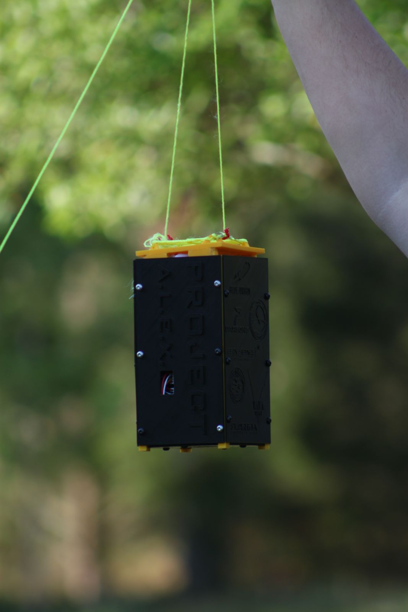
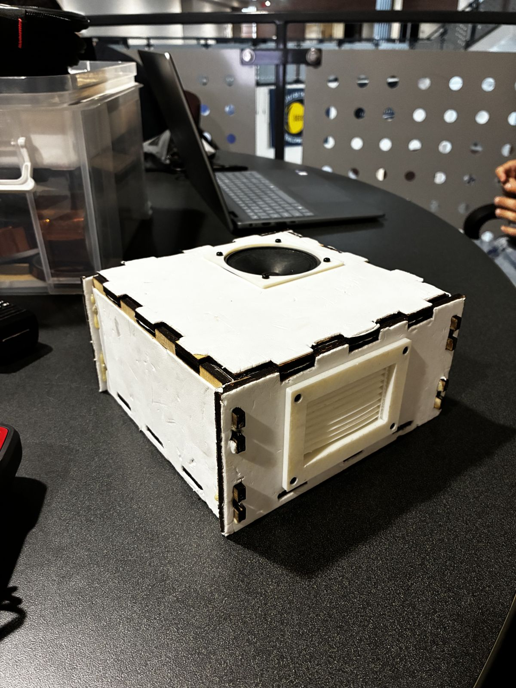

Aerospace Engineering · UCF · Expected Spring 2028
Satellite integration and mechanical design.
I design enclosures and mounts, integrate and assemble spacecraft hardware, and write the documentation that lets a team rebuild it.
At UCF's Knights Satellite Club, I'm also helping a team that has flown balloon payloads grow into one that builds and launches its own CubeSats.

Projects

TSat-2A
Tethered-satellite enclosure, parachute release and a 450-ft flight that taught me to check the full deployment path.

KAOS-2
A laser-cut, screw-free 4U enclosure for a high-altitude balloon, now being redesigned after review of the first build.

KLEO-1
Learning flight-proven CubeSat hardware inside and out, and documenting it so the club can build its own.
Beyond the hardware
Building toward orbit
Until now, the club's flights have been high-altitude balloons and tethered tests. An earlier satellite attempt stalled and never launched. KLEO is meant to change that, and getting there takes more than one good build, so alongside the engineering I've been working on what a satellite program needs to exist.
Know the hardware
Leading integration on flight-proven CubeSat hardware and documenting it, so the club can design its own.
02Find a launch
In active talks with four launch providers about a ride to orbit for KLEO.
03Fund and structure it
As treasurer: a rebuilt budget system, grant funding, and a nonprofit corporation that can sign launch agreements.